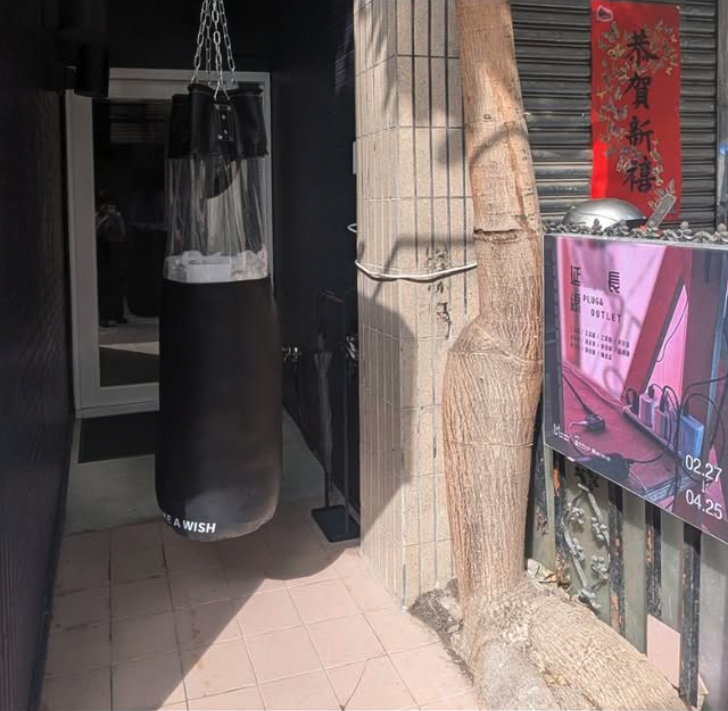

/About
米豆藝術空間（The Middle Art Space）
成立於 2023 年，致力於當代藝術策展、國際文化交流與跨領域參與計畫的研究與推廣。我們特別關注臺灣與中東歐、東南亞以及國際青年藝術家與文化工作者的發展策略與實踐，並積極結合不同領域的資源與合作夥伴，創造多元的交流平台。
米豆藝術空間不僅舉辦當代藝術展覽、講座、論壇與駐村計畫，也透過飲食、工藝、文學等形式促進跨文化對話。未來將持續透過藝術與文化活動，呈現具臺灣特色的在地語彙，並與世界文化脈動接軌，持續創造臺灣在國際文化舞台上的能見度。
/Location
空間位置：103台北市大同區太原路156巷13號1樓
營業時間：每日11:30–20:00，週一、日公休
/Contacts
連絡電話：+886 2558 3500
